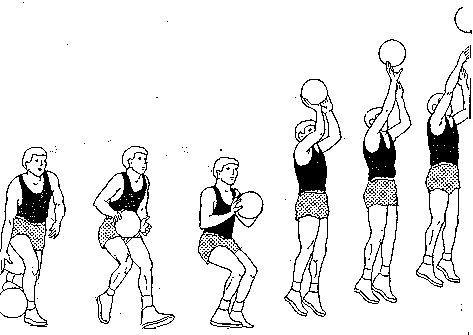
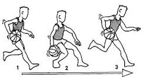
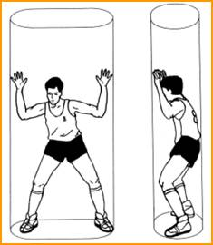

El baloncesto nació como una respuesta a la necesidad de realizar alguna actividad deportiva durante el invierno en el norte de Estados Unidos. Al profesor de la Universidad de Springfield (Massachusetts), James Naismith (un profesor canadiense) le fue encargada la misión, en 1891, de idear un deporte que se pudiera jugar bajo techo, pues los inviernos en esa zona dificultaban la realización de alguna actividad al aire libre.
James Naismith analizó las actividades deportivas que se practicaban en la época, cuya característica predominante era la fuerza o el contacto físico, y pensó en algo suficientemente activo, que requiriese más destreza que fuerza y que no tuviese mucho contacto físico. El canadiense recordó un antiguo juego de su infancia denominado “duck on a rock” (El pato sobre una roca), que consistía en intentar alcanzar un objeto colocado sobre una roca lanzándole una piedra. Naismith pidió al encargado del colegio unas cajas de 50 cm de diámetro pero lo único que le consiguió fueron unas canastas de melocotones, que mandó colgar en las barandillas de la galería superior que rodeaba el gimnasio, a una altura determinada.
El baloncesto fue un deporte de exhibición en los Juegos Olímpicos de 1928 y Juegos Olímpicos de 1932, alcanzando la categoría olímpica en los Juegos Olímpicos de 1936. Aquí Naismith tuvo la oportunidad de ver como su creación era convertida en categoría olímpica, cuando fue acompañado por Adolf Hitler en el palco de honor, en Alemania. El baloncesto femenino debió esperar hasta 1976 para su admisión como deporte olímpico
El juego gustó y se estableció pronto en Estados Unidos. México, fue donde primero se introdujo por motivos geográficos. A Europa, llegó de la mano de las sedes de YMCA a París, Francia. Pero no fue hasta la primera guerra mundial que cogió gran impulso, sobre todo gracias a los soldados estadounidenses que jugaban en sus ratos libres.
La línea de tres puntos (triple), se probó en Estados Unidos en 1933. Sin embargo, no sería adoptada por la ABA hasta el año 1968, llegando a la NBA en la temporada 1979-80. En el baloncesto FIBA habría que esperar hasta 1984 para que formara parte de su reglamento.
El pase es la acción por la cual los jugadores de un mismo equipo intercambian el balón, existen diferentes tipos entre los cuales se encuentran: pecho, picado, beisbol, por detras de la espalda, por encima de la cabeza, Alley-Oop. Los mas comunes son el de pecho, el picado y el de por encima de la cabeza.
Tiro

El tiro o lanzamiento es la acción por la cual un jugador intenta introducir el balón dentro del aro, los tipos existentes son: tiro en suspension, tiro libre, Bandeja(guira), donqueo, gancho.
Manejo de Balon

Acción que consiste en que el jugador empuje el balón contra el suelo y el balon retorne a su mano, los tipos existentes son: control, proteccion, velocidad.
Defensa

La posición defensiva consiste en flexionar ligeramente las rodillas y realizar desplazamientos laterales intentando robar el balón o evitando una acción de pase, tiro o intento de penetración a la canasta por parte de su rival.